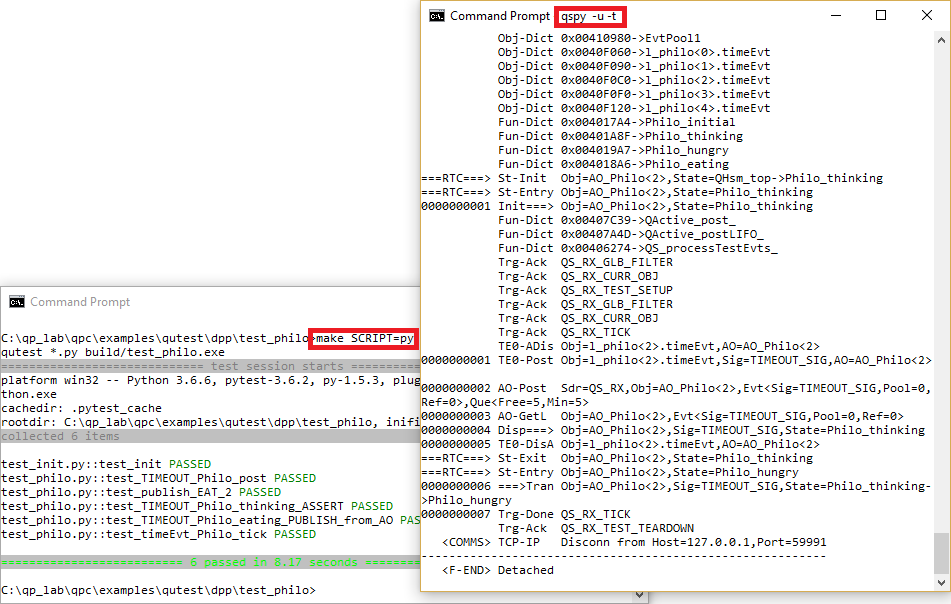
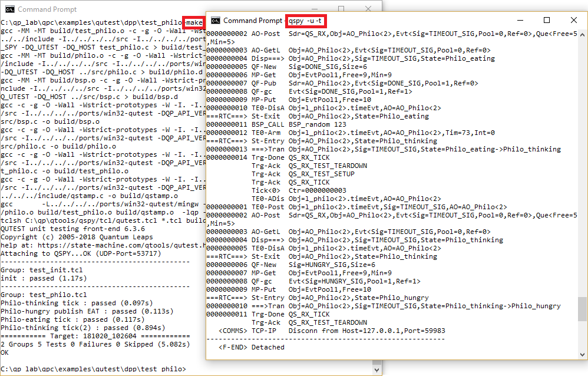
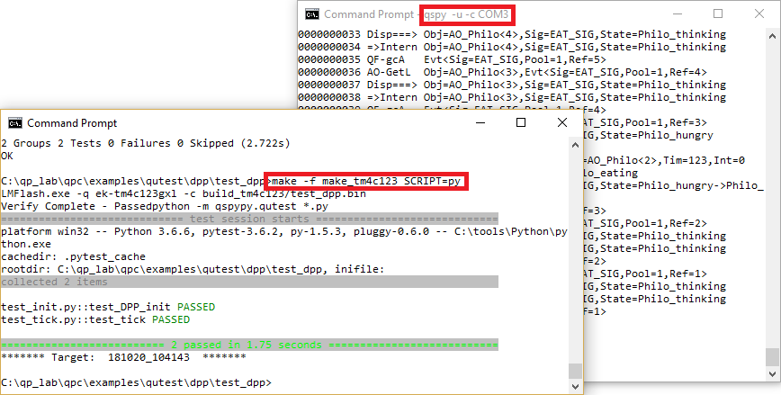
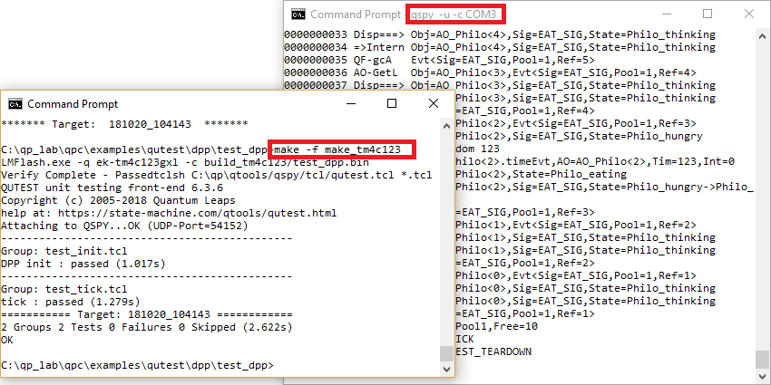

The examples in the qpcpp/examples/qutest directory demonstrate how to test embedded code with the QUTest unit testing harness. Currently, the following examples are provided:
The projects within the examples/qutest directory have the customary structure used for testing. The production code to be tested is located in the src sub-directory. The testing code is located in the test_... sub-folder(s). The following directory tree illustrates the structure for the dpp example:
Philo active object Table active object Philo AO B Philo AO Philo (Python) Philo (Tcl) Table AO B Table AO Table (Python) Table (Tcl) main() function for DPP application A The src sub-directory contains the production code to be tested. This directory contains the .qm model file as well as the generated code from the model.
B The test_philo sub-directory contains the unit test code for a component, such as Philo in this case. Here, you can find the test_*.c test fixture, the test scripts test_*.py (Python) and test_*.tcl (Tcl) as well as the cross-platform Makefile to build the code and run the tests on the host.
C The test_dpp sub-directory contains integration-test code for the application, such as DPP in this case. The objective is to test the initialization and interactions among components. Here, you can find the main.c main() function as well as the test_dpp.c test fixture. This directory also contains make_* makefiles to build and run the code on the embedded targets.
As usual in Test-Driven Development (TDD), the provided Makefiles both build the code and run the tests.
Typically, you start testing on your host computer. Before building/running the code, you need to open a terminal window and launch the QSPY host application with the -t command-line option.
Next, you open another terminal window, change directory to the test_... folder of interest, and type make. This will build the application and run the tests (Python), as shown in the screen shot below:

To use the Tcl scripts, you invoke the make with the SCRIPT=tcl symbol:

The QUTest testing system allows you also to easily test the code directly on the embedded target board. The dpp/test_dpp/ directory illustrates this option by providing the makefiles for embedded boards, such as the TM4C123 (Tiva LaunchPad) make_tm4c123.
To test the code on an embedded board, you need to connect the board to the host computer and launch the and launch the QSPY host application with the -c COM<n> command-line option, where <n> is the specific COM port number on your host that the board is using.
Next, you open another terminal window, change directory to the test_... folder of interest, and type make -f make_tm4c123. This will build the application and run the tests (Python), as shown in the screen shot below:

To use the Tcl scripts, you invoke the make -f make_tm4c123 with the SCRIPT=tcl symbol:
